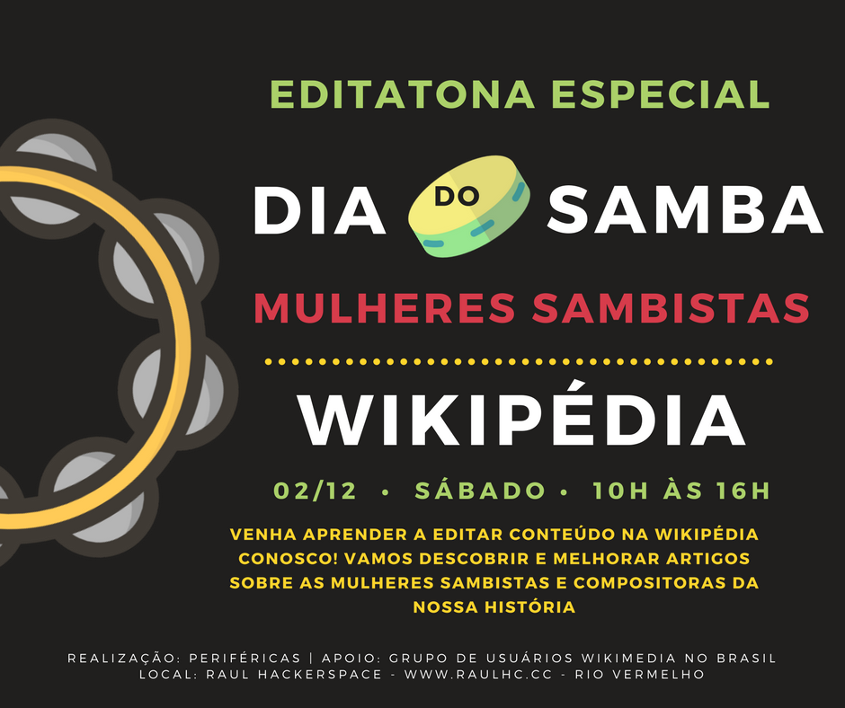

Raul Hacker Club
Quem Sou Eu
Jornalista formada pela UFBA.
Atualmente curso Sistemas de Informação.
Trabalho com desenvolvimento web.
O Raul Hacker Club
Hackerspaces são laboratórios colaborativos criados e mantidos pela comunidade, onde as pessoas podem se encontrar, compartilhar conhecimento, tecnologias e trabalhar em seus projetos livremente.
Tais espaços são terrenos férteis para a co-criação de projetos em diversas áreas, tais como: ciências, culinária, biologia, pedagogia, artes, eletrônica, hardware, software, segurança, espaçomodelismo, audiovisual, robótica, etc. - ou o que mais a criatividade permitir e a diversão guiar, ou seja, o infinito.
Resumindo: É um lugar pra você aprender e criar o que gosta de uma forma divertida e livre... não o que mandam!
http://raulhc.cc/O que a gente faz no Raul Hacker Club?
Grupos de estudo, oficinas, eventos de tecnologia, hackerativismo...Alguns Projetos...
- Crianças Hackers
- Editatona das Minas
- Periféricas
- LampiãoSec
- Grupo de Estudo para Eletrônica e Arduíno
- Virada Hacker
- Archives World Map
- Laboratório de Dados para Cidadania Hacker
- ...
Lista de Projetos: http://raulhc.cc/Projetos
... e Eventos
- Encontro de Design Gráfico Livre
- Software Freedom Day
- Oficina de mapeamento OpenStreetMap
- Iemanjam
- CarnaHacker
- Dia de Dados Abertos
- Reunião Rotaract Club Bahia Norte
- Reunião Salvador pela Educação
- ...
Lista de Eventos: http://raulhc.cc/Agenda/Historico
Crianças Hackers


GEEA
Make Electronics

LampiãoSec
https://lampiaosec.github.ioEditatona das Minas
https://www.facebook.com/perifericas Laboratório de Dados para Cidadania Hacker


Dia dos Dados Abertos
www.opendataday.org/pt_br/
Povo Vota
http://povovota.herokuapp.com https://github.com/fargolo/pvotaCusto Parlamentar
https://github.com/Edely/custo-parlamentarOnde nos encontrar:
Grupo do Telegram do Lab de Dados
https://t.me/raspagemRaulHCNo Raul Hacker Club
Site
http://raulhc.cc/Grupo do Telegram
https://web.telegram.org/#/im?p=@raulhackerclubnaooficialEm cima do antigo Irish Pub (Dubbliners)
Os slides estão disponíveis em:
https://edely.github.io/apresentacao-cgu-unifacsObrigada!
Contatos: